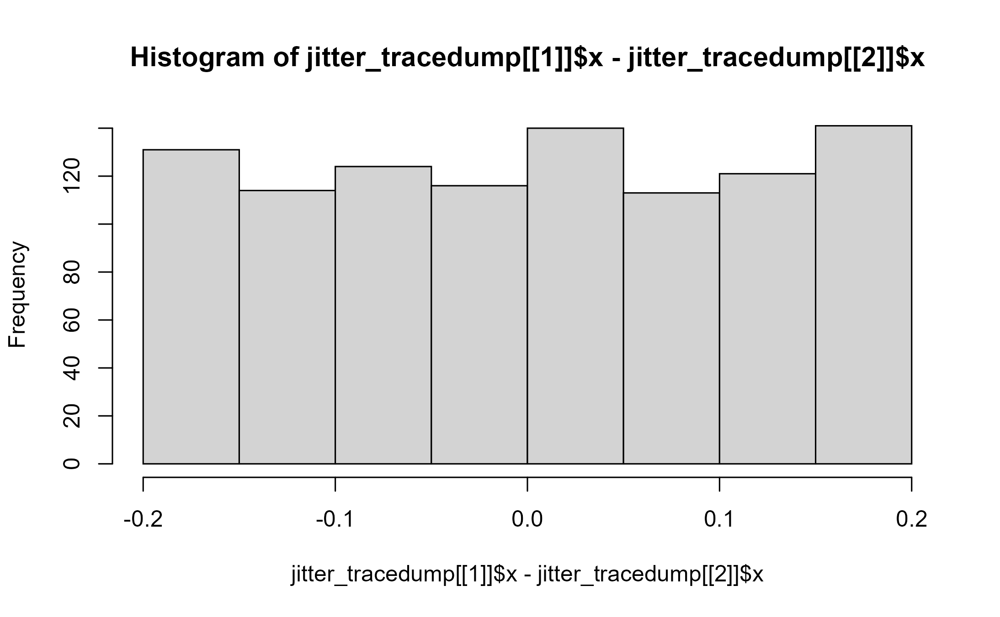

Programmatically debug ggproto methods with trace
ggtrace(method, trace_steps, trace_exprs, obj, once = TRUE, .print = TRUE)
Arguments
| method | The method name as a string. Alternatively an expression
that evaluates to the ggproto method in the form of |
|---|---|
| trace_steps | A list of positions in the method's callstack to trace. |
| trace_exprs | A list of expressions to evaluate at each position specified
in To simply run a step and return its output, you can use the If |
| obj | The ggproto object. Can be omitted if the method is an expression
in the form of |
| once | Whether to |
Whether to print the output of each expression to the console. Defaults to |
Details
ggtrace() is a wrapper around base::trace() which is called on the ggproto method.
It calls base::untrace() on itself on exit by default, to make its effect ephemeral (like base::debugonce()).
A major feature is the ability to pass multiple positions and expressions to trace_steps and trace_exprs.
It is recommended to consult the output of ggbody() when deciding which expressions to evaluate at which steps.
The output of the expressions passed to trace_exprs is printed while tracing takes place. The last ggtrace()
trace dump is available for further inspection with last_ggtrace().
Gotchas
If you wrap a ggplot in
invisible()to silenceggtrace(), the plot will not build, which also means that the tracing is not triggered. The print/plot method of ggplot is what triggers the evaluation of the plot code. It is recommended to allowggtrace()to print messages for safety, but if you'd really like to silence it, you can do so by wrapping the plot ininvisible(capture.output(<plot>)).If for any reason
ggtrace(once = TRUE)fails to untrace itself on exit, you may accidentally trigger the tracing again. To check if a method is being traced, callggbody()on it and inspect its body. If you see.doTrace()scattered around the body, that's a sign the method is still being traced.
See also
Examples
# \dontrun{ library(ggplot2) p <- ggplot(diamonds[1:1000,], aes(cut, depth)) + geom_point(position = position_jitter(width = 0.2, seed = 2021)) p#> [[1]] #> `{` #> #> [[2]] #> trans_x <- if (params$width > 0) function(x) jitter(x, amount = params$width) #> #> [[3]] #> trans_y <- if (params$height > 0) function(x) jitter(x, amount = params$height) #> #> [[4]] #> x_aes <- intersect(ggplot_global$x_aes, names(data)) #> #> [[5]] #> x <- if (length(x_aes) == 0) 0 else data[[x_aes[1]]] #> #> [[6]] #> y_aes <- intersect(ggplot_global$y_aes, names(data)) #> #> [[7]] #> y <- if (length(y_aes) == 0) 0 else data[[y_aes[1]]] #> #> [[8]] #> dummy_data <- new_data_frame(list(x = x, y = y), nrow(data)) #> #> [[9]] #> fixed_jitter <- with_seed_null(params$seed, transform_position(dummy_data, #> trans_x, trans_y)) #> #> [[10]] #> x_jit <- fixed_jitter$x - x #> #> [[11]] #> y_jit <- fixed_jitter$y - y #> #> [[12]] #> transform_position(data, function(x) x + x_jit, function(x) x + #> y_jit) #>## Example 1 ==== ## Inspect what `data` look like at the start of the function ggtrace(PositionJitter$compute_layer, trace_steps = 1, trace_exprs = quote(head(data))) p#> Tracing method compute_layer from <PstnJttr> ggproto. #> #> [Step 1]> head(data) #> x y PANEL group #> 1 5 61.5 1 5 #> 2 4 59.8 1 4 #> 3 2 56.9 1 2 #> 4 4 62.4 1 4 #> 5 2 63.3 1 2 #> 6 3 62.8 1 3 #> #> Untracing method compute_layer from <PstnJttr> ggproto. #> Call `last_ggtrace()` to get the trace dump.## Example 2 ==== ## What does `data` look like at the end of the method? Unfortunately, `trace()` only lets us enter ## at the beginning of a step, so we can't inspect what happens after the last step is evaluated. To ## address this, `ggtrace()` offers a `~list` keyword which gets substituted for the current line. ## We also set `.print = FALSE` to disable printing of the output ggtrace( PositionJitter$compute_layer, trace_steps = 12, trace_exprs = quote(~step), .print = FALSE ) p#> Tracing method compute_layer from <PstnJttr> ggproto. #> #> [Step 12]> transform_position(data, function(x) x + x_jit, function(x) x + y_jit) #> #> Untracing method compute_layer from <PstnJttr> ggproto. #> Call `last_ggtrace()` to get the trace dump.## Example 3 ==== ## If we want both to be returned at the same time for an easier comparison, we can pass in a list ## of expressions. We use `rlang::exprs()` here to conveniently construct a list of expressions. ggtrace( PositionJitter$compute_layer, trace_steps = c(1, 12), trace_exprs = rlang::exprs(data, ~step), .print = FALSE ) p#> Tracing method compute_layer from <PstnJttr> ggproto. #> #> [Step 1]> data #> #> [Step 12]> transform_position(data, function(x) x + x_jit, function(x) x + y_jit) #> #> Untracing method compute_layer from <PstnJttr> ggproto. #> Call `last_ggtrace()` to get the trace dump.## Example 4 ==== ## The output of the evaluated expressions can be inspected with `last_ggtrace()` jitter_tracedump <- last_ggtrace() lapply(jitter_tracedump, head)#> $`[Step 1]> data` #> x y PANEL group #> 1 5 61.5 1 5 #> 2 4 59.8 1 4 #> 3 2 56.9 1 2 #> 4 4 62.4 1 4 #> 5 2 63.3 1 2 #> 6 3 62.8 1 3 #> #> $`[Step 12]> transform_position(data, function(x) x + x_jit, function(x) x + y_jit)` #> x y PANEL group #> 1 4.980507 61.50684 1 5 #> 2 4.113512 59.77872 1 4 #> 3 2.083873 56.86655 1 2 #> 4 3.952698 62.42703 1 4 #> 5 2.054530 63.29763 1 2 #> 6 3.080538 62.77536 1 3 #># }